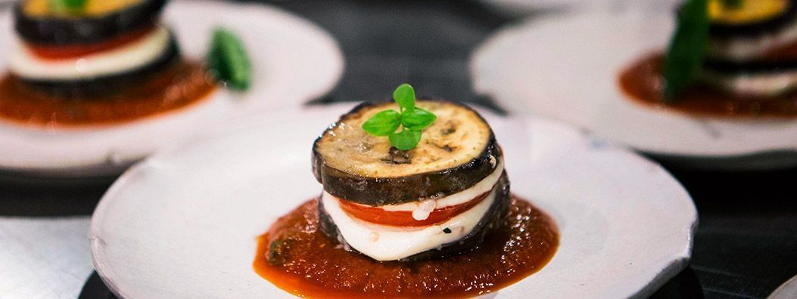
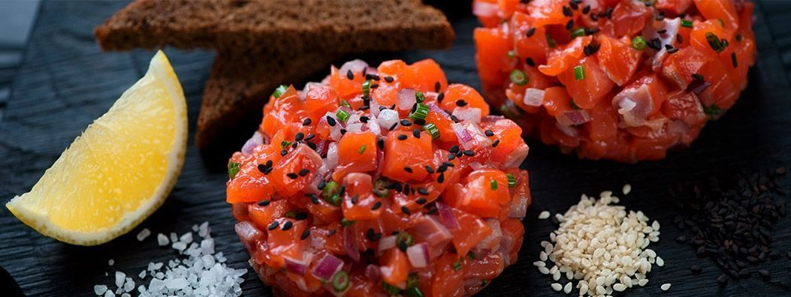
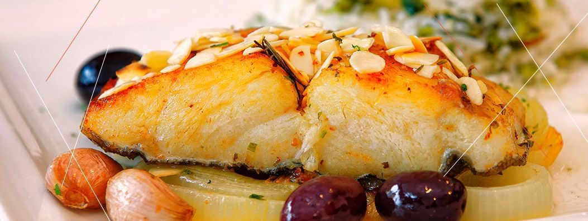

Os nomes dos pratos brasileiros costumam ser uma
mistura de termos portugueses e africanos.
O passado colonial do país marcou em grande parte a
arte culinária brasileira. Colonos adaptaram as
receitas com ingredientes brasileiros e criavam novos pratos.
Escravos trazidos da África para trabalhar nas plantações
de açúcar deixaram sua marca, criando e influenciando os
nomes de muitos pratos brasileiros. Da mesma forma, o legado
indígena continua importante, em especial com a contribuição da mandioca.
Itália

É difícil falar de comida italiana, é mais fácil saborear.
Os tons originais da cozinha italiana verde, vermelho
e amarelo sempre produzem uma maravilhosa combinação de sabores.
Geralmente, todos os pratos são derivados de tomate, pão e
também azeite. Os chefs italianos são extremamente meticulosos
na preparação dos alimentos. Eles selecionam os ingredientes
de melhor qualidade na preparação de alimentos italianos.
Japão

A primeira influência estrangeira no Japão foi a China por volta
de 300 aC, quando os japoneses aprenderam a cultivar arroz.
O uso de hashi (os pauzinhos) e o consumo de molho de soja
e coalhada de soja (tofu) também vieram da China.
No início dos anos 1200, o comércio com outros países começou a
trazer influências do estilo ocidental para o Japão. Os
holandeses introduziram milho, batata e batata doce. Os
portugueses introduziram a tempura, a fritura em massa.
Arroz e macarrão são os dois alimentos básicos da dieta japonesa.
O arroz, cozido ou no vapor, é servido em todas as refeições.
O macarrão tem muitas variedades. O salmão é frequentemente
também lembrado quando se trata da cozinha japonesa.
Portugal

Tomates e batatas foram levados para a Europa,
abacaxis brasileiros foram introduzidos nos
Açores, pimentas brasileiras cresceram em
Angola, café africano foi transplantado para
o Brasil hoje produzindo cerca de metade do
suprimento mundial, castanhas de caju brasileiras
desembarcam na África e na Índia e chá foi
apresentado aos europeus. Hoje, o gosto português
por certos ingredientes como a canela ou curry
em pó, por exemplo, também é um legado dessa época.
Pão, arroz, especiarias, pastelaria, enchidos e
marisco especialmente bacalhau continuam a ser a
base de muitas refeições portuguesas.
Espanha
A Espanha ocupou muitas áreas da América do Sul no passado. Daqui, eles trouxeram consigo uma variedade de ingredientes, como tomates, batatas, pimentões e chocolate. Naquela época, a culinária espanhola continuava evoluindo, utilizando ingredientes de várias regiões do mundo.
Curiosamente, os espanhóis foram os primeiros europeus a usar tomates na cozinha. Na Europa, inicialmente, acreditava-se que os tomates eram tóxicos, pois eram parentes da planta do tabaco. No entanto, quando os espanhóis descobriram que os tomates não eram venenosos e que, na verdade, eram deliciosos e nutritivos, começaram a incorporar a então desconhecida fruta em suas cozinhas regionais.
Comidas típicas de todo o mundo
A comida se tornou uma das principais motivações
dos viajantes na hora de escolher um destino.
Os viajantes começaram a gastar mais tempo e
dinheiro em experiências únicas de alimentos e
bebidas eles querem aprender sobre as culturas
e costumes culinários locais e viver experiências
gastronômicas autênticas; Vimos um aumento global
no número de empresas de turismo gastronômico e
marketing nesse sentido, organizando eventos e feiras
focadas em alimentos e bebidas. O turismo alimentar
é finalmente o mainstream. Além disso, se você está fora
do seu país, precisará de algumas dicas para não se
perder na grande variedade de sabores e escolhas.
Ou, se você está apenas curioso para saber algumas das melhores
comidas típicas de cada país, encontrará o que precisa.